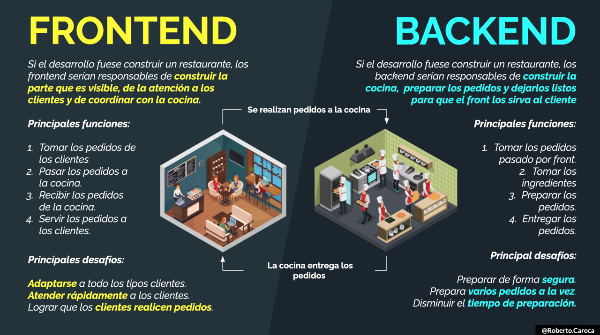

Mi pagina web
Bienvenido a mi ejemplo de frontend. Esta es una pagina siemple con estilos basicos
PREGUNTAS
VOLVER
FRONTEND
El frontend sirve para realizar la interfaz de un sitio web, desde su estructura hasta los estilos, como pueden ser la definición de los colores
